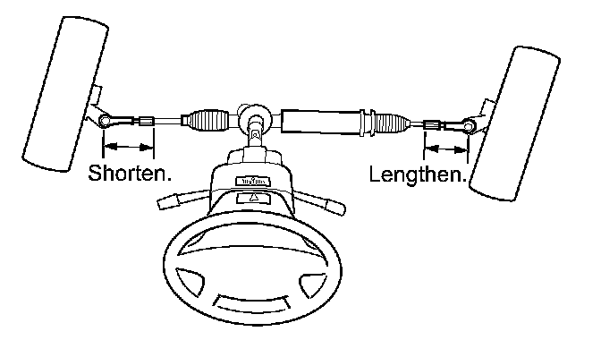
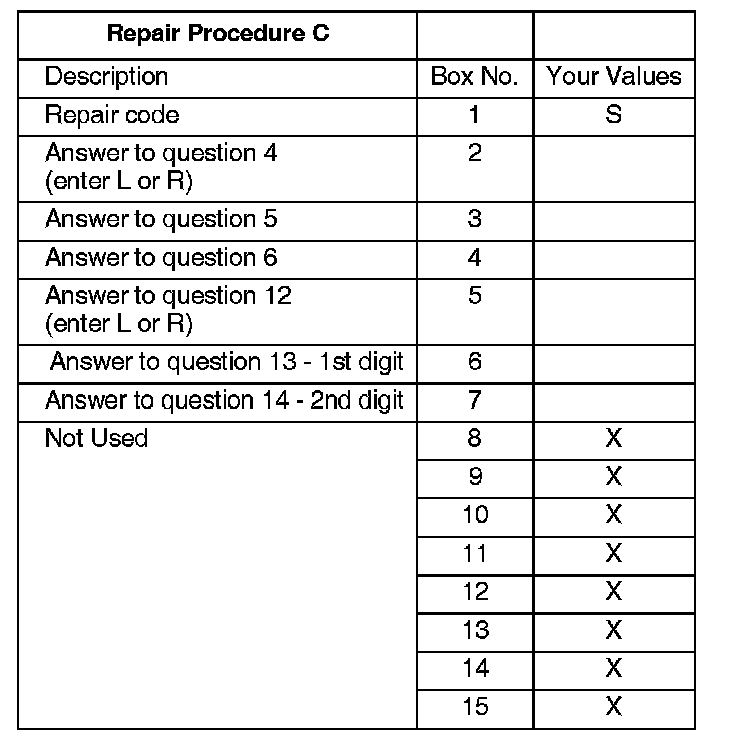

Repair Procedure C
1. Make sure the steering wheel is centered.^ Turn the steering wheel all the way to the right until it stops.
^ Turn the steering wheel all the way to the left, and count the number of revolutions until it stops.
^ Divide the number of revolutions in half, and turn the steering wheel until it is centered. For example, if it takes four revolutions of the steering wheel to go from lock to lock, two turns is centered.
^ If the steering wheel is off-center by a large amount (20 mm or more), it is possible that the steering wheel is not centered on the steering column shaft. Reinstall the steering wheel before going to step 2.
2. Place the vehicle on a lift, rotate the steering wheel until the steering wheel is centered, then raise the vehicle.

3. Adjust the tie-rods. Use your measurements from questions 13 and 14 of the test-drive to make your adjustment.
^ If the wheels are pointed to the right, shorten the driver's side tie-rod, and lengthen the passenger's side.
^ If the wheels are pointed to the left, shorten the passenger's side tie-rod, and lengthen the driver's side.
^ Each 3600 turn of the tie-rod equals about 8 mm of steering wheel adjustment. For example, a steering wheel is off-center by 4 mm, with the front wheels pointed right (when the steering wheel is centered). To correct the off-center, shorten the driver's side tie-rod by a half-turn, and lengthen the passenger's side tie rod by a half-turn.

4. Use your diagnosis worksheet to fill in the following table and build your 15-digit DTC.